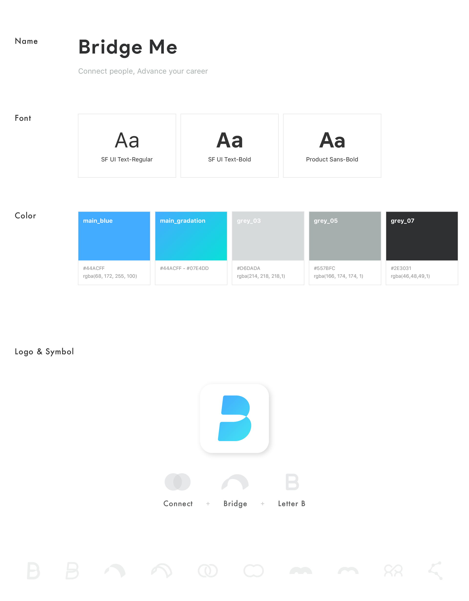

Overview
Bridge Me is a career counseling platform that connects people for sharing their issues and know-hows about career development especially related to working overseas. Many people all over the world dream of working overseas such as Silicon Valley. However, working overseas is not always as easy as just flying to someplace and finding a job like you would back in your home country. There are visa issues, work permits, and language barriers to think about. Unless you have someone who got a job overseas, it is not easy to find information outside of the internet. Moreover, the information related to this is extremely scattered around the Internet, and there are many inaccuracies. In response to this problem, I designed a mobile app to enable people to share their career-related concerns and get practical advice from experts working in the related fields.
Design Process

Problem
First, Most of the people live with their own career concerns. Such as, Where can I move a job? How can I handle the salary negotiation? If I want to change my career, what am I supposed to do first? and so on... Second, There are many career information website and mentoring service. But, It is not easy to get the suitable information for an individual situation. Third, Many of similar services provide just one-time information, also inadequate to maintain ongoing communication and relationship.
Research
We did secondary research including benchmarks, as well as primary research including the online survey, and individual interviews. The purpose was gathering market status and define the real problems from the many of different services. Also, to gain a deeper understanding of people who have career concern. 1. Benchmarks Compared and analyzed 8 services including people matching services (i.e.Tinder) as well as providing career information platforms. We researched about 'What information they offer?', pros & cons, main process of service, etc. You can check the details on here. 2. Online Survey We have conducted online surveys to investigate the market status and discomfort of related services. We've collected a lot of answers quantitatively about 'What is the main concerns about career development?', 'How people solved these concerns?', 'How satisfied they are?', 'Which information would be most needed?', etc. Created a 15-question questionnaire and over 107 people answered it. Detailed results are here. 3. Individual Interview With 18 people who are graduate students and beginner workers, we had quick interviews to know the needs about career advice or mentoring service. Here is the summary note. Also, we have conducted long interviews with 4 peoples who are having an expertise in their industry with many work-experience in abroad. Here is the notes of expert interview. *If you want to check the detailed result, please feel free to request me. I could send them to individually.
Insights
First, People believed that it is more effective to find information through people who had similar experiences rather than over the internet surfing. Second, People generally want to follow the career path of people with similar backgrounds. For this reason, they always want to have chances to talk with them more deeply.
Goal
First, Recommend people with qualified preference such as career background, expertise, personality. Second, Connect with people to make a qualified & meaningful networking. Third, Keep a long-term relationship to develop their career.
Persona
Based on user insights from previous research, I set up two fictional characters who have difficulties in solving the career development to derive the insights about user goals, behavioral patterns, and pain points.
User Task Flow
Based on previous research and goals, I have drawn up a user's anticipated service task flow. Through the diagram, I could identify the importance of the features before visualize the interface from cover to cover.

Wireframes
Once we finalized the user task flow and had a clear of what we wanted to design, I started with some quick sketches and continued with creating high-fidelity mockups. Since we were going to use the mockups for user validation, we used as much real data as possible.
Outcomes
After organizing the wireframes and user flow chart, I focused on creating a brand identity that could convey a positive and intuitive feeling to users. I have branded logo using the metaphor of the bridge and the alphabet B, focusing on "the connection between people and people", which is the main characteristic of Bridge Me service. After I made the logo and main color theme of the app, I designed overall screens for the each feature based on wireframes. Also, I created a prototype that can represent the overall flow of the app through the inVision. You can see the overall design and basic interaction of Bridge Me below.
01 Branding
02 Selected UI

Epilogue & Challenge
As I was doing this project, a lot of design challenges encountered. 'How to show the user's personal information at a glance on the profile?', 'How to collect subjective information such as personality and expertise in an objective form and to express it simply?', 'How to make the interaction concise and easy to understand in tournament pages?' and so on.. I identified and applied the solutions in various challenges with the simple user tests through prototypes. Currently, Bridge Me service have released Beta version and doing second user test internally. We will officially launch the version 1.0. at playstore and appstore till next month. In the next version, it aims to maintain and secure more qualified users by reinforcing bookmark and rating system. In addition, we currently only provide text-chat function, but later we will support various communication methods such as video or voice chat for the better long-lasting relationship between users.